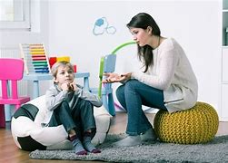

<!DOCTYPE html>
<html>

<head>
  <meta charset="utf-8">
  <meta name="viewport" content="width=device-width">
  <title>PSICOLOGIA INFANTIL</title>
  <link href="style.css" rel="stylesheet" type="text/css" />
   <link href="estilo2.css" rel="stylesheet" type="text/css" />
  <script src="script.js"></script>

  <style> 
    *{margin: 0;
     padding: 0;}
    html{
      background-color: black;
    }
/**/
    body{
      width: 1000px;
      height: 1040px;
      margin: auto;
      background-color: blue;
    }
/**/
    header{
      width: 1000px;
      height: 200px;
      background-color: ;
    }
/**/
    section#banner{
      width: 800px;
      height: 200px;
      float: right;
      background-color:#3BB9FF;
    }
/**/
    section#logo{
      width: 200px;
      height: 200px;
      float: left;
      background-color: lavender;
    }
/**/
    nav{
      width:1000px;
      height: 40px;
      background-color:;
    }
/**/
        main{
      width: 1000px;
      height: 760px;
      background-color: gray;
    }

/**/
    aside#left{
      width:1000px;
      height: 770px;
      float: left;
      background-color: #48CCCD;
    }

    footer{
      width: 1000px;
      height: 40px;
      background-color:#9afeff ;
    }
    
  </style>
</head>

<body>

  <header>
    <section id="logo">
      

         
    </section>

    <section id="banner">
      
    </section>
    
  </header>

  <nav>
  
  </nav>

  <main>
    <aside id="left">

      <h1>Sobre la carrera de Psicologia infantil</h1>
      <h2><p>La carrera de psicologia infantil es una excelente opcion para cualquier persona que este interesada en trabajar con niños, tanto personal como profesionalmente. La psicologia infantil es un subconjunto de la psicologia clinica que se centra en el desarrollo y el tratamiento de los niños. </p></h2>
      <h2><p>Los psicologos infantiles pueden trabajar en diversos entornos, como hospitales, escuelas, clinicas, oficinas privadas e incluso prisiones. Tambien pueden optar por trabajar con niños de forma individual o en grupo, por lo que se requiere de habilidades como la escucha, la capacidad de observacion y la habilidad para interactuar con los niños a nivel profesional, por tanto, es necesario pasar por una enseñanza academica que posibilite contar con la experiencia y teoria adecuada para sus intervenciones.</p></h2>

      
      <h1>¿Por que estudiar psicologia infantil?</h1>
     <h2><p>Tanta es la demanda dentro de los  diferentes contextos relacionados con los niños, que su alcance requiere de psicologos infantiles que puedan intervenir en ellos. Por lo general, la mayoría de los terapeutas infantiles creen que  muchos de los comportamientos infantiles provienen de sentimientos que los niños no siempre son capaces de expresar. Motivo por el que los problemas de los niños suelen derivarse de relaciones tensas, angustias o traumas.</h2></p> <br>
      
<h2><p>No es infrecuente, además, que los niños sean remitidos por profesores que plantean sus preocupaciones en relacion con sus habilidades sociales, el comportamiento en casa o en la escuela; el progreso academico o la autoestima; sin embargo, los padres suelen ser los primeros que buscan ayuda cuando sienten que algo va mal con su hijo. </h2></p> <br>
      
     <h2><p>Por esta razon, los psicologos infantiles suelen ser contratados por las escuelas para trabajar con estudiantes que tienen dificultades o problemas de desarrollo. Aunque tambien son requeridos por las universidades y colegios para enseñar a los estudiantes sobre el desarrollo infantil. Pues es una area imprescindible de estudio e intervencion. Otros optan por trabajar en hospitales u otras organizaciones de asistencia social, esto debido a que es una rama extensa y se necesita de varios psicologos para ejercer esta disciplina.</p></h2>

      <center></center>


      <body>
     
           <ul>
      <li><a href="./infantil.html">PSICOLOGIA INFANTIL</a> </li>
      <li><a href="./psicologo.html">REGRESAR</a></li>
    </ul>

   </body>
    </aside>
  </main>


  <footer>
  <div class="contenedor">
      Jazmin Hernandez Santiago 402 po              
  </div>
</footer>
</body>
</html>